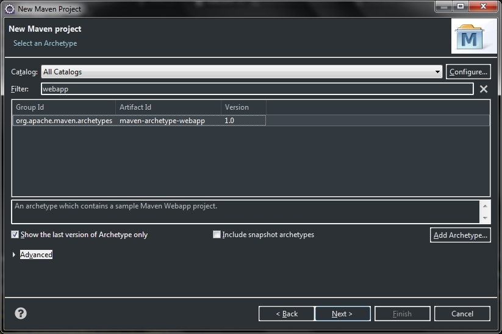
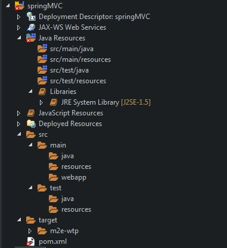
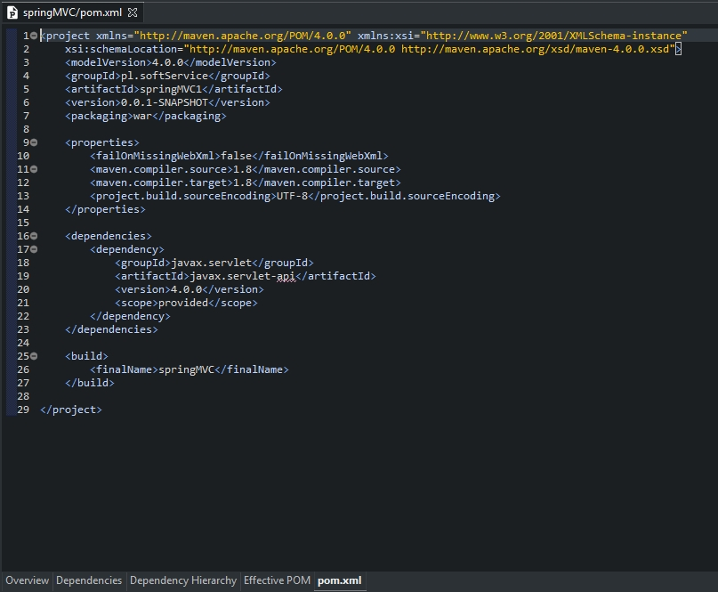
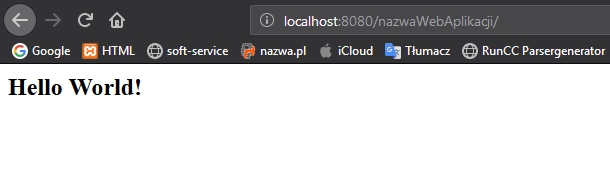
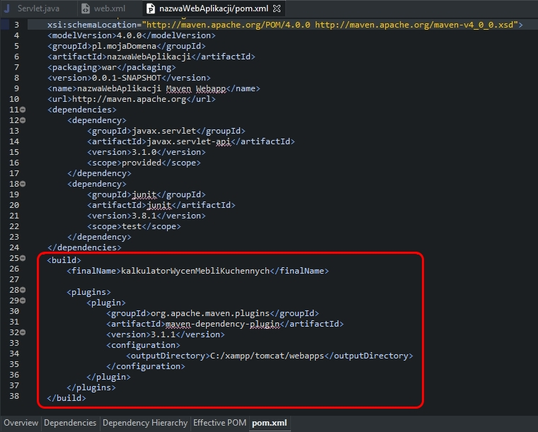

Aby móc w Eclipse utworzyć projekt maven dla javy EE, należy najpierw zainstalować maven na komputerze a później doinstalować odpowieni plugin do Eclipse. Drugą opcją jest instalacja odpowiedniej wersji Eclipse wraz z preinstalowanym oprogramowaniem maven. Aby w Eclipse utworzyć projekt maven dla javy EE należy kliknąć File -> New -> Other...

Wybieramy Maven -> Maven Project i przechodzimy do okna ustawień nowego projektu. W tym oknie nie zmieniamy nic. Klikamy Next i przechodzimy do kolejnego okna konfiguracyjnego nowego projektu:

W tym oknie wybieramy archetyp projektu maven. Aby utworzyć projekt maven web aplikacji wybieramy maven-archetype-webapp i przechodzimy do następnego okna klikając przycisk Next
W tym oknie ustawiamy Group Id oraz Artifact Id i następnie klikamy przycisk Finish. Projekt zostaje utworzony.

Poniżej przedstawiono drzewo katalogów po utworzeniu projektu web aplikacji maven w Eclipse:
Aby projekt poprawnie się budował i można go było uruchomić to należy dodać do pliku pom.xml zależność javax.servlet-api jak pokazano to na poniższym obrazku
Po wprowadzeniu jakichkolwiek zmian w pliku pom.xml należy kliknąć ppm na nazwę projektu Maven -> Update Project. Tak przygotowany projekt można już skompilować.
Kompilację robimy z konsoli poleceniem mvn clean package, przechodząc do folderu projektu, jak pokazano to na załączonym obrazku:
Poprawnie skompilowany i spakowany projekt można uruchomić już na serwerze. Wystarczy tylko przenieść utworzony plik nazwaWebAplikacji.war do katalogu głównego serwera i uruchomić go. Efekt można zobaczyć w przeglądarce internetowej:
Aby móc skonfigurować folder, do którego maven będzie przenosił zbudowany projekt war, należy dodać zależność maven-war-plugin do projektu oraz odpowiednio skonfigurować lokalizację wyjściową dla pliku war, jak pokazano to na poniższym obrazku:
Powyższe ustawienia umożliwiają nadanie nazwy gotowemu plikowi war oraz utworzenie go we wskazanej lokalizacji.